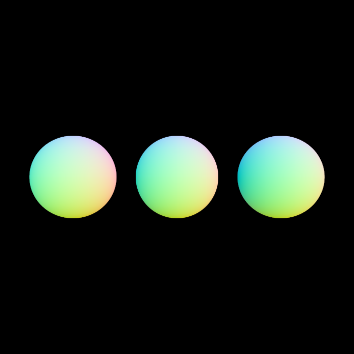
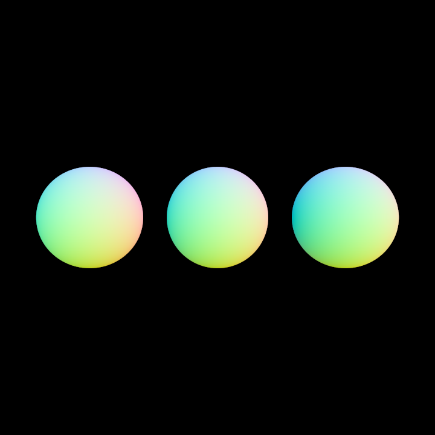

Intel's Open Image Denoise integration (5 pts)
Implementation
Added files:
oidn/denoise.batsrc/normals.cppsrc/albedo.cpp
I decided to implement the denoiser as an external post processing step. For that, I first installed
OIDN on windows. Since the precompiled OIDN binary
relies on the .pfm file format, I have to convert the .exr images Nori produces to this format.
For that I use FFMPEG. Since the denoiser also outputs
.pfm images, in a last step, one can use the tev tool to view them
and convert them to .png files. Note that for the denoiser to work, the reconstruction filter used for rendering
a scene in Nori must be the box filter.
Since the denoiser works better if it is provided with auxiliary information in the form of normals and albedo values, I also
added two new integrators that compute these values.
The normals.cpp now takes an additional boolean xml parameter denoise.
This is because the denoiser takes normals are in the range [-1, 1], so I have to additionally map them to this range if denoise
is set to true. If denoise is false, normals in the range [0, 1] are computed (e.g. for visualization). Note that one should consider
disabling the exception thrown by block.cpp regarding invalid radiance values when computing the normals for the denoiser.
The albedo.cpp takes no xml parameters and is responsible for computing the albedo values. It does this by calling a method getAlbedo()
which I added to the bsdf.h file and also to all bsdf instances. For most bsdfs, this just returns 1.0f except for the diffuse and microfacet bsdfs.
Note that both integrators ignore pure medium boundaries and normals.cpp also ignores environment map emitters.
To avoid always having to type in the series of commands for first converting the format and then denoising the image, I wrote a small script denoise.bat that
takes the image to denoise and the two auxiliary images as an argument and outputs the denoised .pfm file. This script assumes
that the denoiser and the ffmpeg binary have been added to the path. Example usage:
D:\ETH_Git\ACG\msiebenmann_marmatter\oidn\denoise.bat .\cbox_vol_mats_bunny_het.exr .\cbox_vol_mats_bunny_normal.exr .\cbox_vol_mats_bunny_albedo.exr
Validation
I validate my implementation by comparing two different scenes with their denoised result. I also show their auxiliary images. The first comparison uses a mats integrator for the original image, the second one a mis integrator.
Comparison bunny cloud:
Comparison spheres (dielectric, diffuse, microfacet from left to right):
 
